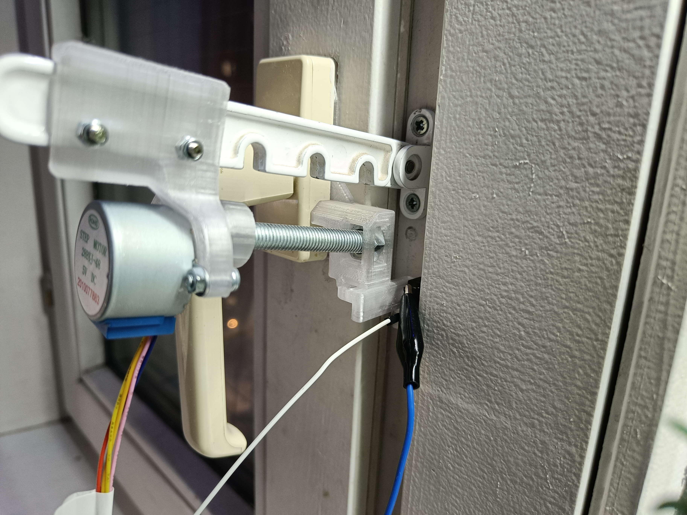

— Закрой окно, а не то твой брат заболеет. Лечить его будешь сам! — сказала в очередной раз мама.
А что делать? Пришлось закрыть.
Каждый день происходило одно и то же: я открывал окно из-за жары и духоты, в комнату врывался декабрьский двадцатиградусный мороз, приходила мама и объявляла побочные эффекты этого самого мороза. Напоминание о том, что в комнате сидят два человека, которым позарез нужен кислород не действовали. Пришлось включать голову. И знаете, помогло! Тогда я ничего не знал об индустрии автоматического проветривания (и даже не предполагал о её существовании), а потому решил действовать по наитию.
Если формально, то техническое задание было придумано такое. Сделать магическую коробочку для поддержания оптимальной температуры в комнате во время отопительного сезона. На основании температуры в комнате должно выбираться наиболее оптимальное положение форточки, при котором температура не упадёт ниже комфортного уровня, но при этом сохранится наибольший приток свежего воздуха.
С чего же начать? Пожалуй, с механики. Самый простой способ что-то двигать с помощью электричества — это электромотор, вращающий свой вал. После недолгих поисков был куплен простейший редукторный шаговый моторчик, который ставят в очень бюджетные принтеры. Обвязка в виде термометра и ардуины нашлась в закромах.
Работа закипела: за два дня был собран первый прототип на макетной плате и написана первая версия прошивки. Но это и правда было увлекательно, а потому просто. Только вот как превратить крутящий момент мотора в поступательное движение? Себе-то я этот вопрос не задавал, ведь под парами всегда стоит 3D принтер. При помощи нескольких пластиковых деталей, болта с гайкой и капли суперклея мотор научился передвигать каретку в плоскости, перпендикулярной валу.
Тут много подробностей о костылях, которые пришлось применить
Ну что, вперёд-назад каретка ездит, прошивка худо-бедно мотор крутит. Запускаем? Щаз!
Проблема первая: тяга мотора примерно нулевая. Ни одна библиотека не помогла. А ещё и драйвер я достал не удобный, которому только частоту шагов подавай, а дедовский, который всего лишь сигнал с логического на силовой уровень меняет. Пришлось руками прописывать все такты мотора, анализируя принцип работы по гифке из интернета. Зато после этого момент вращения стал очень даже приличным. Всю зиму алгоритм шага не менялся, заеданий практически не было.
Проблема вторая: клинит! Я радостно закрепил мотор на оконной раме, установил на створку ответную часть и осознал, что только в одном положении гайка нормально ходит по винту: при полностью закрытом окне. Времени заказывать гибкие муфты не было, поэтому был предпринят отчаянный шаг: мотор поселился на крючке-ограничителе. А что? К раме закреплён крепко, люфта как раз хватает чтобы окно могло приоткрываться. Смекало4ка!
Проблема вторая с половиной: снова клинит! Теперь люфт оказался уже излишним. В положении закрытого окна мотор сильно менял своё положение и после этого уже не мог открыть окно. Пришлось приобрести длинную пружину, которая тянула всю систему вверх и удерживала мотор в оптимальном положении. Некрасиво, но сработало.
Дальше нужно было решить вопросы чисто эстетического плана: сделать корпус для электроники, собрать провода в жгут, отладить прошивку. Со временем прошивка научилась фиксировать окно в нескольких промежуточных положениях, красиво мигать светодиодом и даже автоматически вынимать винт из гайки, позволяя кожаному мешку самостоятельно открывать окно.
И вот результат работы: слева на фотографии самое начало проекта, а справа — состояние устройства через четыре месяца. И видео в качестве дополнения: тык.
Но чего-то всё равно не хватало. Не хватало компактности, эстетичности и стабильности работы.
На дворе осень 2022 года и я работаю над второй версией устройства. Она хоть и дороже, но куда компактнее и умнее предыдущей. Термометр работает по WiFi, мотор управляется хорошим драйвером, в качестве вала используется специальный винт. To be continued, как говорится…